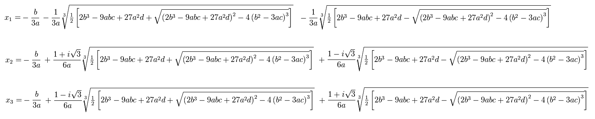
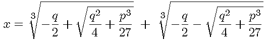

Take a look at this equation: 3x^3 + 5x^2 - 13x + 3=0
At first sight, many don't have any method of solving this effectively.
The cubic expression is not factorable and the equation has no rational solution. So what do we do?
Most people will go and search up the cubic equation formula, but that doesn't look too good because the formula is so long it literally is unable to be copied on a piece of regular size paper.

The sheer complexity of this formula makes it unethical to use. many calculators can not type the imaginary unit contained in the formula and the stacked roots are extremely difficult to get correct.
The question is How is it solved?
This is how to solve a general cubic with all coefficents not equal to zero
Starting off, this cubic needs to be depressed, meaning it's x^2 term no longer appears in the cubic. To depress the cubic, replace every x in the equation 3x^3 + 5x^2 - 13x + 3 = 0 with a value y - b/3a.
In this case, b is equal to 5 and a is equal to 3. The replacement for x is y-5/9. After replacing, the expansion process is very tedious work so the process will be redacted.
The result after expansion is 3y^3 - 142/9y + 8202/729=0
The next step in solving the cubic is to factor out the 3 from all terms so that y^3 has a coefficent of 1
After factoring, the equation becomes 3(y^3 - 142/27y + 2734/729)=0
Now divide both sides by 3. Leaving y^3 - 142/27y + 2734/729=0
A depressed cubic has a much simpler formula being this:

Now people might try to substitute the values into this formula, but they will find a serious problem. This formula gives an output that has imaginary numbers, but from graph analysis, there are only real roots. This is the time to switch methods to trigonometry.
The following steps will not be explained.
- value of z is defined by sqr(-4q/3). After substituting values into the expression, z is approximately 2.6480833972918
- the value of cos(3θ) can be found using -sqr(27r^2/-4q^3). After substituting values into the expression, cos(3θ)=-0.80785980055745
- the value of θ can be found by cos^-1(-0.80785980055745)/3. This value is approximately 47.962450698923.
- To find one solution, use the expression z*cos(θ). This evaluates to approximately 1.7732029557704
- To find 2nd solution, use the expression z*cos(θ+120). This evaluates to approximately -2.5898550460583
- To find 3rd solution, use the expression z*cos(θ+120+120). This evaluates to approximately 0.81665209028785
These are not the solutions to the original equation because the numbers obtained are the solutions are for the modified equation. Remember x=y- 5/9
- Solution:1.2176474002148
- Solution:-3.1454106016139
- Solution:0.26109653473229